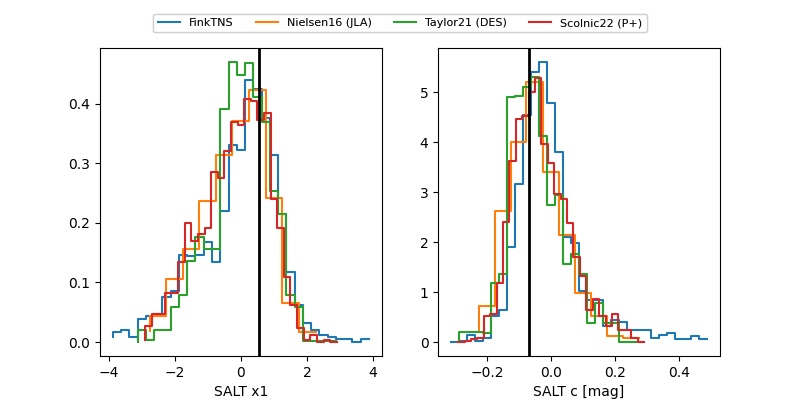

FINK: ZTF25abnfpdh
Lasair: ZTF25abnfpdh
ALeRCE: ZTF25abnfpdh
TNS: 2025wyt
YSE: 2025wyt
ZTF25abnfpdh (ztf,fink)
2025wyt (yse,tns)
equatorial (ra, dec) = (353.4445,+21.94924)
galactic (l, b) = (100.0787,-37.45207)

last ps1::i=20.20, ps1::r=19.90, ztfg=20.29
1 ps1::i, 2 ps1::r, 5 ztfg detections